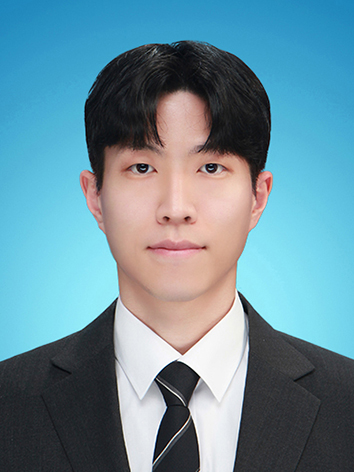

Adaptive
holographic imaging
Learning complex optical fields through differentiable wave propagation. Adapting reconstruction to system variability without paired object-domain ground truth.
Nature Machine Intelligence, 2023COMPUTATIONAL IMAGING & INVERSE PROBLEMS
Postdoctoral Researcher / KAIST
Bringing physical models and learning together
to see beyond imperfect measurements.

I develop computational imaging methods that work with the imperfections of real optical systems.
I am a postdoctoral researcher at KAIST, where I received my Ph.D. in Bio and Brain Engineering under the supervision of Prof. Mooseok Jang. My work combines differentiable optical forward models, learned priors, and numerical optimization to reconstruct information from limited, noisy, or imperfectly calibrated measurements.
Working across algorithms and experiments, I study holographic microscopy, phase retrieval, EUV reflective ptychography, and semiconductor image restoration.
Explore my research directionsPhysical modeling, calibration, and learning—
designed together for real measurements.
Learning complex optical fields through differentiable wave propagation. Adapting reconstruction to system variability without paired object-domain ground truth.
Nature Machine Intelligence, 2023Recovering missing phase with amplitude-only diffusion priors. Combining learned image structure with physical measurement constraints when complete training data are unavailable.
Amplitude-only diffusion priorsReconstructing through noise and model mismatch—from joint calibration in EUV reflective ptychography to training-free deblurring for semiconductor SEM inspection.
ECCV, 2024Jointly estimating the image and the imaging system.
EUV reflective ptychography · Geometry, probe & scan-position calibration† Equal contribution
Propagation distance as a physical style for adaptive complex-field reconstruction.
Learning from amplitudes alone; recovering phase through physics at inference.
Noise-robust analytic kernel estimation and deep image priors for semiconductor SEM imaging.
Jointly learning the optical field and forward model to adapt beyond the training range.
Chanseok Lee, Mooseok Jang
Dong-gu Lee†, Gookho Song†, Chunghyung Lee, Chanseok Lee, Mooseok Jang
Jiseong Barg, Chanseok Lee, Chunghyeong Lee, Mooseok Jang
Jongin You, Doeon Lee, Gookho Song, Chanseok Lee, Mooseok Jang
Hyeonggeon Kim, Gookho Song, Jong-in Yu, Chanseok Lee, Mooseok Jang
KAIST · Computational Imaging
Developing physics-based computational imaging methods that integrate physical modeling, calibration, and machine learning, with current research including EUV reflective ptychography.
KAIST · MOOO Lab
Physics-aware holographic imaging, generative inverse solvers, optical system development, and SEM image restoration.
KAIST
Advisor: Prof. Mooseok Jang
KAIST
Advisor: Prof. Mooseok Jang
Hanyang University
Young Investigator Award
SPIE Advanced Biophotonics Conference
Grand Prize
Institute for Promotion of Engineering and Science of Korea
Best Paper Award
KAIST
Innovative Paper Award
Next Generation Lithography + Patterning Conference
Ph.D. Scholarship
Ilun Science & Technology Foundation
Fourier optics / Differentiable forward models / Diffusion priors / Inverse problem optimization / Optical prototyping / Python / MATLAB / PyTorch / TensorFlow
For research conversations and collaborations
in computational imaging, optics, and inverse problems.